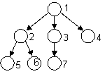
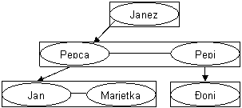

Drevesne strukture: Osnove
Predavanje na temo zgradbe grafičnega (in tudi splošnega) pogona igre + senitelov dodatek o senčilnikih.
Drevesa igrajo v programiranju zelo pomembno vlogo (pri podatkovnih bazah, grafičnem programiranju, umetni inteligenci,). Tokratni članek obsega osnove drevesnih struktur in krajšo predstavitev splošnih dreves.
Rekurzija
Rekurzija je zelo pomembno (in tudi zapleteno) poglavje o drevesih. Zakaj pravzaprav gre?
Programerski slovarji ta pojem razlagajo takole:
Rekurzija: glej Rekurzija
Bistvo rekurzije je v tem, da rekurzivna funkcija kliče sama sebe. Poleg tega pa lahko z rekurzijo problem razdelimo na več podproblemov, kar lahko znatno pospeši reševanje zadanega problema.
Kako se vse to naredi?
Vsaka rekurzivna funkcija je sestavljena iz rekurzivnega dela (dela kjer kaže sama nase) in terminacijskega dela. Terminacijski del je pomemben zato, ker bi se drugače rekurzivna funkcija ponavljala v neskončnost. To so za nas najpomembnejše lastnosti rekurzije.
Neskončnosti izvajanja rekurzije pa ne potekajo točno tako, kot je navedeno v prejšnjem odstavku. Rekurzija si namreč ob vsakem izvajanju dodeli nek prostor v spominu (stack). Ko je spomin poln, pride do t.i. "stack overflowa" in funkcija se konča. Prostor, ki ga funkcija zapolni ob vsakem izvajanju, vsebuje informacije o stanju funkcije. Tako se lahko v kateremkoli trenutku vrnemo na katerokoli stanje, kjer se je rekurzivna funkcija nahajala. Tukaj se skriva naša ključna informacija.
Poglejmo primer rekurzivnega in nerekurzivnega reševanja problema:
1.: void izpisi_stevilo_rekurzivno( int stevilo )
2.: {
3.: cout << stevilo << endl;
4.: if ( stevilo == 0 )
5.: cout << "Konec rekurzijske funkcije\n";
6.: else
7.: {
8.: izpisi_stevilo_rekurzijsko( stevilo - 1 );
9.: }
10.: }
vrstica 3: izpišemo število
vrstica 4: terminacijski del (preverjamo ali smo z odštevanjem že prišli do 0), če smo, izpiši tekst (vrstica 5)
vrstica 8: če še nismo končali, ponovno začni našo rekurzivno funkcijo (to je rekurzivni del).
In še nerekurzivno (z iteracijo):
1.: void izpisi_stevilo( int stevilo )
2.: {
3.: while( stevilo != 0 )
4.: {
5.: cout << stevilo << endl;;
6.: stevilo--;
7.: }
8.: cout << "Konec nerekurzijske funkcije\n";
9.: }
vrstica 3: terminacijski del
vrstica 5: izpišemo število
vrstica 6: zmanjšamo število in ponovimo zanko.
V takšnih primerih rekurzije ne bomo uporabili, saj ima kar nekaj slabosti (je nekoliko počasnejša, poleg tega pa se ne more ponavljati v neskončnost).
Pomembno: rekurzivna funkcija si dodeljuje prostor v spominu, kjer shranjuje podatke o njenih prejšnjih stanjih (zna biti nepotrebno tratenje spomina).
Spoznali ste osnove rekurzij. Več informacij lahko najdete na  googlu.
googlu.
Drevesa
Pri programiranju se uporablja več vrst drevesnih struktur. Drevesne strukture se uporabljajo za iskanje po bazah podatkov ("2-3 trees", "2-3-4 trees", "AVL trees", "red-black trees",...), pri 3D grafiki ("BSP trees", "OCtrees", "quad trees",...), splošnem game programmingu (minmax, pathfinding trees,...), datotečnih sistemih, stiskanju podatkov,... Vseh teh pa si zaenkrat še ne bomo ogledali.
Najosnovnejši primer predstave drevesa:

Vsak krog predstavlja eno vozlišče (node). V tem primeru bi lahko kateregakoli izmed vozlišč proglasili za izhodiščnega (root node). Zato bolj pogosto uporabljamo poseben razred, ki kaže na eno vozlišče, ki predstavlja izhodišče.

Deli drevesa
Kot že omenjeno je drevo sestavljeno iz vozlišč. Začetno vozlišče se imenuje root node. če ima izhodiščno vozlišče pod sabo še kakšnega, se "spodnji" imenuje child node (hčerinsko vozlišče), "zgornji" pa je v takem primeru parent node (starševsko vozlišče). Vozlišče, ki nima hčerinskega vozlišča, se imenuje leaf node.
Poglejmo primer:

Vozlišče 1 je izhodno (in hkrati starš vozlišč 2, 3 in 4). Vozlišče 2 je hčerinsko volišče vozlišča 1 in starš vozlišč 5 in 6. Vozlišče 3 je hčerinsko vozlišče vozlišča 1 in starš vozlišča 7. Vozlišče 4 je hčerinsko vozlišče vozlišča 1, obenem pa je tudi leaf node, saj nima hčerinskega vozlišča.
Drevo lahko ima tudi poddrevesa. V našem primeru bi lahko določili, da je vozlišče 2 izhodiščno vozlišče poddrevesa.
Sedaj pa se mi že vozlajo prsti! :-]
Drevesna urejenost
Poleg vseh starševsko-hčerinskih zadev, lahko drevesa razdelimo tudi na višinske stopnje (Height Levels). Izhodiščno vozlišče je ničelne stopnje (ali prve, odvisno od našega štetja), vsako hčerinsko vozlišče pa je za eno stopnjo višje kot je njegov starš.

Osvojili smo osnovno teorijo, sedaj pa h konkretnim drevesom.
General Tree
Splošno drevo (general tree) je drevo z enim izhodiščnim drevesom in neomejenim številom hčerinskih vozlišč.
Najpogosteje se taka drevesa uporablja pri družinskih drevesih:

V takšni obliki bi težko kaj spravili v računalnik, zato se drevo največkrat prikazuje kot povezan seznam (linked list). Namesto seznama lahko uporabimo katerokoli drugo primerno linearno "shrambo".(npr. polja).
Družinica, predstavljena zgoraj, bi potemtakem izgledala takole (s povezanimi linearnimi "shrambami"):

Kot vidite, vsako vozlišče kaže na eno samo linearno "shrambo".
V praksi
Verjetno splošnega drevesa v igrah ne boste uporabljali z namenom predstavljanja izvora svoje družine. V igrah se splošna drevesa največkrat uporabljajo v procesih odločanja (umetna inteligenca).
Na primer:
Računalniški igralec vas zagleda, kako plezate čez most, da bi zavzeli njegovo bazo.

To bi bil eden najosnovnejših (in zelo kratkih) primerov odločanja. V igrah se velikokrat pojavljajo mnogo bolj zapletena in večja drevesa.
Zaključek
V prvem delu smo spoznali nekaj osnov dreves. Upam, da sem vam to področje dovolj nazorno predstavil, da si sedaj lažje predstavljate, kaj so drevesa, če vam jih imeni programer. Če pa imate kakšno vprašanje, komentar ali kritiko, pa mi pošljite e-mail.
Izvorne kode zgornjega članka (še) nisem priložil. Stanje se lahko spremeni, če bo povpraševanje po mejlu dovolj veliko.